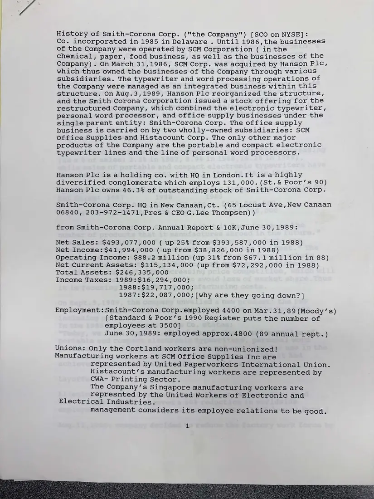
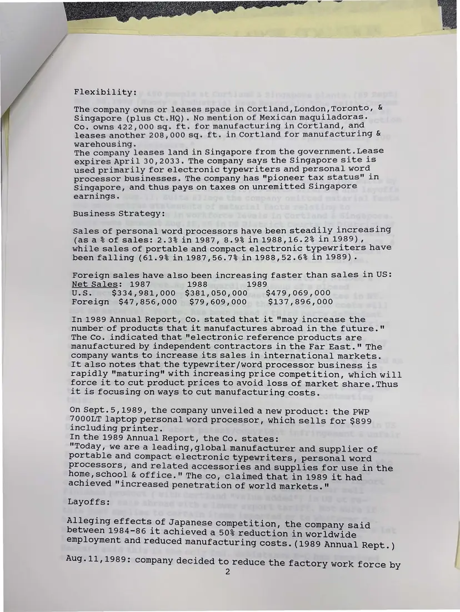
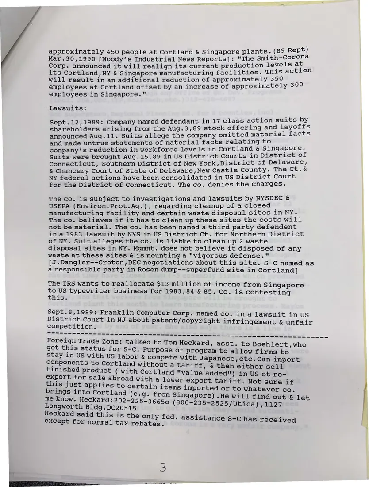

Report, 3 pages
Coalition research notes: “History of Smith-Corona Corp.”
[1990]Date inferred
Typed research notes compiled from annual reports, Moody's, and other sources: the company's ownership by Hanson PLC, sales and income, its Cortland and Singapore plants, unions, lawsuits, and its trade zone status.
Page 4 of these notes records interviews with individual workers and is not published. Page 1 was photographed twice.
Download or cite this itemPages


(open zoom view)Read the page text (machine-read, mostly readable)
This text was generated automatically from the photograph and has not been corrected. The image is the authoritative record.
History of Smith-Corona Corp. ("the Company") [SCO on NYSE]:
Co. incorporated in 1985 in Delaware . Until 1986,the businesses
of the Company were operated by SCM Corporation ( in the
chemical, paper, food business, as well as the businesses of the
Company) . On March 31,1986, SCM Corp. was acquired by Hanson Plc,
which thus owned the businesses of the Company through various
subsidiaries. The typewriter and word processing operations of
the Company were managed as an integrated business within this
structure. On Aug.3,1989, Hanson Plc reorganized the structure,
and the Smith Corona Corporation issued a stock offering for the
restructured Company, which combined the electronic typewriter,
personal word processor, and office supply businesses under the
single parent entity: Smith-Corona Corp. The office supply
business is carried on by two wholly-owned subsidiaries: SCM
Office Supplies and Histacount Corp. The only other major
products of the Company are the portable and compact electronic
typewriter lines and the line of personal word processors.
Hanson Plc is a holding co. with HQ in London.It is a highly
diversified conglomerate which employs 131,000. (St.& Poor’s 90)
Hanson Plc owns 46.3% of outstanding stock of Smith-Corona Corp.
Smith-Corona Corp. HQ in New Canaan,Ct. (65 Locust Ave,New Canaan
06840, 203-972-1471,Pres & CEO G. Lee Thompsen) )
from Smith-Corona Corp. Annual Report & 10K,June 30,1989:
Net Sales: $493,077,000 ( up 25% from $393,587,000 in 1988)
Net Income: $41,994,000 ( up from $38,826,000 in 1988)
Operating Income: $88.2 million (up 31% from $67.1 million in 88)
Net Current Assets: $115,134,000 (up from $72,292,000 in 1988)
Total Assets: $246,335,000
Income Taxes: 1989:$16,294,000;
1988:$19,717,000;
1987:$22,087,000; [why are they going down? ]
Employment: Smith-Corona Corp.employed 4400 on Mar.31,89(Moody’s)
[Standard & Poor’s 1990 Register puts the number of
employees at 3500]
June 30,1989: employed approx.4800 (89 annual rept.)
Unions: Only the Cortland workers are non-unionized!
Manufacturing workers at SCM Office Supplies Inc are
represented by United Paperworkers International Union.
Histacount’s manufacturing workers are represented by
CWA- Printing Sector.
The Company’s Singapore manufacturing workers are
represnted by the United Workers of Electronic and
Electrical Industries.
management considers its employee relations to be good.

(open zoom view)Read the page text (machine-read, mostly readable)
This text was generated automatically from the photograph and has not been corrected. The image is the authoritative record.
Flexibility: The company owns or leases space in Cortland, London, Toronto, & Singapore (plus Ct.HQ). No mention of Mexican maquiladoras. Co. owns 422,000 sq. ft. for manufacturing in Cortland, and leases another 208,000 sq. ft. in Cortland for manufacturing & warehousing. The company leases land in Singapore from the government . Lease expires April 30,2033. The company says the Singapore site 1s used primarily for electronic typewriters and personal word processor businesses. The company has "pioneer tax status" in Singapore, and thus pays on taxes on unremitted Singapore earnings. Business Strategy: Sales of personal word processors have been steadily increasing (as a % of sales: 2.3% in 1987, 8.9% in 1988,16.2% in 1989), while sales of portable and compact electronic typewriters have been falling (61.9% in 1987,56.7% in 1988,52.6% in 1989). Foreign sales have also been increasing faster than sales in US: Net Sales: 1987 1988 1989 U.S. $334,981,000 $381,050,000 $479,069,000 Foreign $47,856,000 $79,609,000 $137,896,000 In 1989 Annual Report, Co. stated that it "may increase the number of products that it manufactures abroad in the future." The Co. indicated that "electronic reference products are manufactured by independent contractors in the Far East." The company wants to increase its sales in international markets. It also notes that the typewriter/word processor business is rapidly "maturing" with increasing price competition, which will force it to cut product prices to avoid loss of market share. Thus it is focusing on ways to cut manufacturing costs. On Sept.5,1989, the company unveiled a new product: the PWP 7000LT laptop personal word processor, which sells for $899 including printer. In the 1989 Annual Report, the Co. states: "Today, we are a leading,global manufacturer and supplier of portable and compact electronic typewriters, personal word processors, and related accessories and supplies for use in the home, school & office." The co, claimed that in 1989 it had achieved "increased penetration of world markets." Layoffs: Alleging effects of Japanese competition, the company said between 1984-86 it achieved a 50% reduction in worldwide employment and reduced manufacturing costs. (1989 Annual Rept.) Aug.11,1989: company decided to reduce the factory work force by


(open zoom view)Read the page text (machine-read, mostly readable)
This text was generated automatically from the photograph and has not been corrected. The image is the authoritative record.
approximately 450 people at Cortland & Singapore plants. (eee Mar.30,1990 [Moody’s Industrial News Reports]: "The Smith tae Corp. announced it will realign its current production leve peers its Cortland,NY & Singapore manufacturing facilities. aaa will result in an additional reduction of approximately Sard 450 employees at Cortland offset by an increase of approximately employees in Singapore." Lawsuits: Sept.12,1989: Company named defendant in 17 class aun oiea tavaeed shareholders arising from the Aug.3,89 stock one aches ee eats announced Aug.11. Suits allege the company omitted ma jue and made untrue statements of material facts relating at ope company’s reduction in workforce levels in Cortland & Pape Tal at dy Suits were brought Aug.15,89 in US District Courts in as paid Connecticut, Southern District of New York,District o ge és bs & Chancery Court of State of Delaware,New Castle County. . NY federal actions have been consolidated in US District Cour for the District of Connecticut. The co. denies the charges. The co. is subject to investigations and lawsuits by NYSDEC & USEPA (Environ.Prot.Ag.), regarding cleanup ofa closed ; manufacturing facility and certain waste disposal sites in NY. The co. believes if it has to clean up these sites the costs will not be material. The co. has been named a third party defendent in a 1983 lawsuit by NYS in US District Ct. for Northern District of NY. Suit alleges the co. is liabke to clean up 2 waste disposal sites in NY. Mgmnt. does not believe it disposed of any waste at these sites & is mounting a "vigorous defense." [J.Dangler--Groton,DEC negotiations about this site. S-C named as a responsible party in Rosen dump--superfund site in Cortland] The IRS wants to reallocate $13 million of income from Singapore to US typewriter business for 1983,84 & 85. Co. is contesting this. Sept.8,1989: Franklin Computer Corp. named co. ina lawsuit in US District Court in NJ about patent/copyright infringement & unfair competition. Foreign Trade Zone: talked to Tom Heckard, asst. to Boehlert,who got this status for S-C. Purpose of program to allow firms to stay in US with US labor & compete with Japanese, etc.Can import components to Cortland without a tariff, & then either sell finished product ( with Cortland "value added") in US ot re- export for sale abroad with a lower export tariff. Not sure if this just applies to certain items imported or to whatever co. brings into Cortland (e.g. from Singapore) .He will find out & let me know. Heckard: 202-225-36650 (800-235-2525/Utica) 71127 Longworth Bldg.DCc20515 Heckard said this is the only fed. assistance S-C has r i ; - ecei except for normal tax rebates. ampam RIA ie rere eer tase —- eee
See something wrong, or recognize a person or event? Send a correction. If you hold rights in this item or think it should not be public, write to the same address.